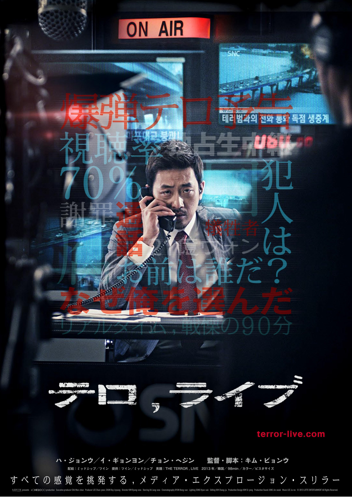
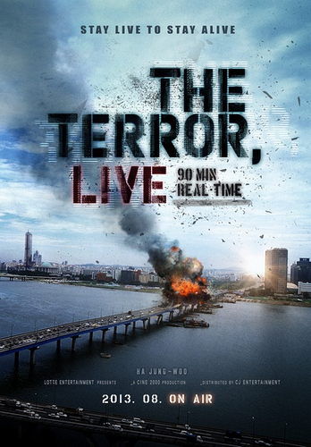
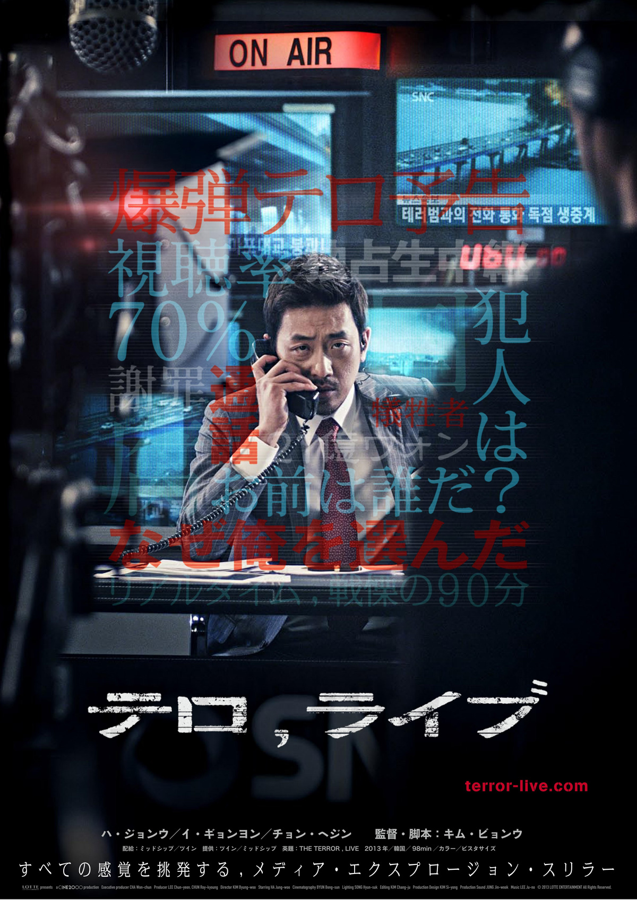
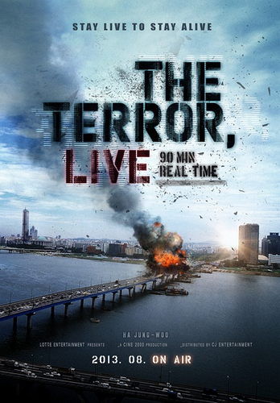
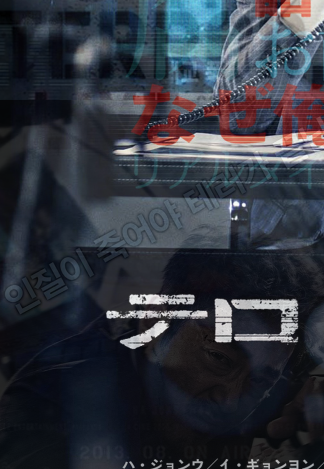
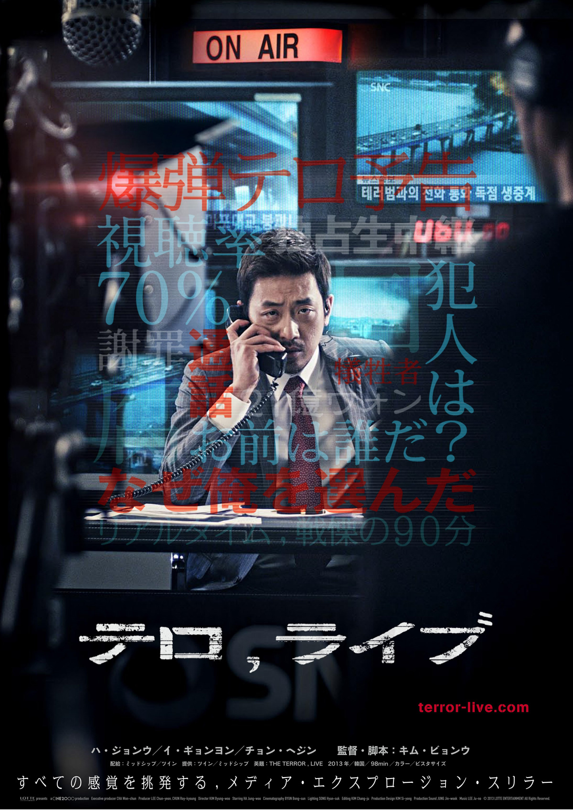
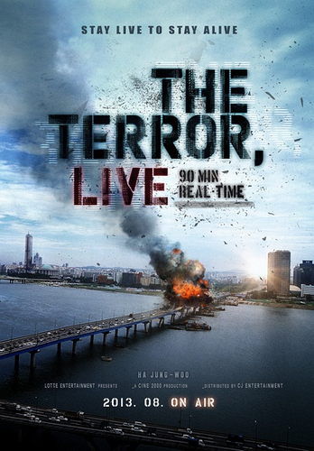

The Terror Live
Kim Byung-woo
Yoon Young-hwa (Ha Jung-woo) was once a top news anchor, but gets demoted due to an unsavory incident. Pulled from primetime TV news and recently divorced, he is now the jaded and bitter host of a current affairs radio program. One day during his morning show, Yoon receives a peculiar phone call threatening to blow up the Mapo Bridge, a major bridge that crosses the Han River and connects Mapo District and Yeouido, Seoul's main business and investment banking district; it is also just outside Yoon's studio building. At first, Yoon takes it as a joke or prank call and tells the terrorist to proceed. He watches in shock as the caller follows through on the threat and detonates explosives that cause Mapo Bridge to collapse, killing innocent people and trapping others.
Realizing this could be a once-in-a-lifetime opportunity to make his comeback as a newscaster, Yoon purposely doesn't call the police. Instead, he sets up a makeshift television studio from his radio station, and negotiates with his former boss, the profit- and ratings-obsessed news producer Cha Dae-eun (Lee Geung-young) who'll do anything to beat the other TV stations in their coverage of the bombing. Then Yoon strikes a dangerous deal with the terrorist to exclusively broadcast their phone conversations live, in real-time, as the whole nation watches.
The Korean version